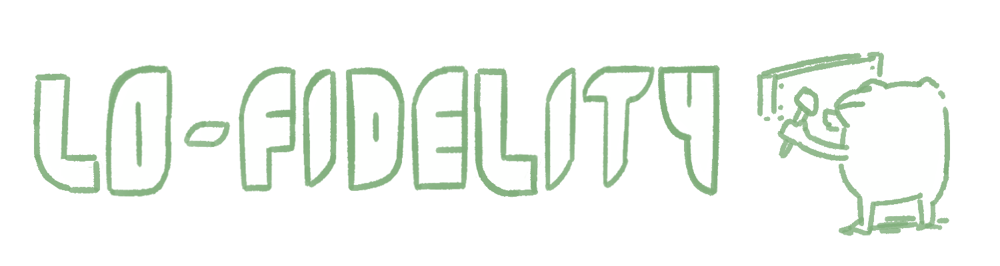
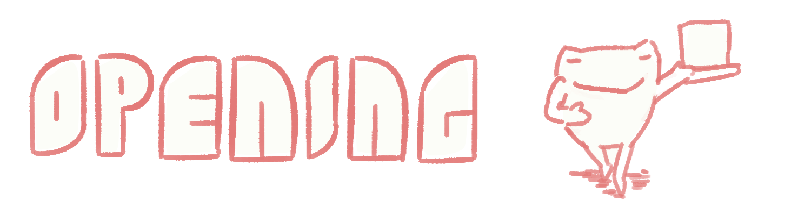
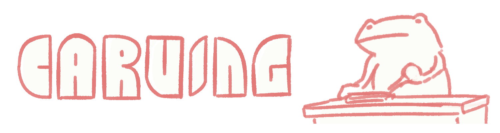
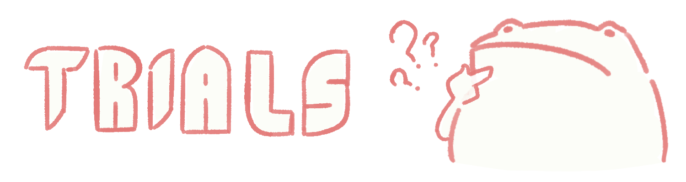
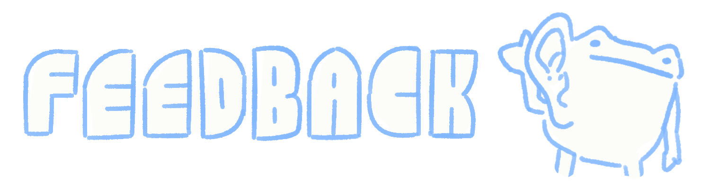

A community building study looking into how micro-communities form and function within a design
critique and stamp carving framework.
details
tools
Illustrator, InDesign, Clip Studio Paint
deliverables
Case Study, Meetings,
Fella Talk Booklet
timeline
Spring 2024
TLDR
• Held multiple group studies to better understand user experience and interactions of a group and the
factors surrounding a meeting.
• Consolidated findings into an informational booklet to make research approachable for curious hosts
Takeaways
• Taking feedback early on is incredibly valuable
• The energy of the host has a strong impact on the overall success of an event.
• Different archetypes of people may reveal themselves across meetings, affecting dynamics between
members.
Fella Talk - The Book!
Researching how to connect with my peers in the UT
Austin Design Cohort. Where are my Fellas?
As we've studied at UT, my peers and I have had less time to connect as we have split off to study different
topics. This split has made classes less engaging and critique less helpful as I feel strong critiques come
from friends "shooting the shit" because we have a pre-established level of trust and respect with each
other.
Some attempts were made to bring students together in our cohort, but they were unsuccessful due to their
rigid, work-like structures. In layman's terms, these meetings felt "too lame" to attend as they didn't feel
like a reprieve to our normal schedules.
As part of an Independent Study course, I held meetings with several of my peers over the semester to learn
what makes a meeting fun and not an obligation and to avoid the "corporate lameness" of
university-proctored events.
The most important goal though was to have an excuse to get together, make cool stuff, and create memories.
If these meetings weren't fun, they lost their way. We were here to build our relationships as Fellas
and have fun just talking. A Fella Talk if you will.

Investigating more into the world of community design Fella Deep Dives
Diving into texts and previous experiences to
learn more about the space of community design In-Depth Fella Analysis
My professor, Cat Ploehn, overlooked this project and suggested various readings to look into.
The Art of Gathering, by Priya Parker, served as a guiding text during this project. The book
introduced me to many topics to experiment with such as:
Host - How do a host's messages affect the perception and memory of a meeting?
Venue - How do the layout and "mood" of the room affect the meeting?
Purpose - How does the purpose guide the activity?
People - How do different levels of engagement from guests affect each other?
I also interviewed my lab manager, Henry, as he had experience holding a similar critique-based
event.
• Decide on projects ahead of time to not waste time together
• Provide guiding questions to assist conversation flow
• Don't demand that everyone brings something to show, can lead to stress or lack of time
• Set the tone that critique should not be mean
Running a low-fidelity version of the meeting to
gather information from members Gathering the Fellas
Professor Ploehn recommended that I hold a Low-Fidelity meeting without any of the components I wanted to
test so I could gauge user interest from my members. After all, if I ran activities that only I was
interested in, this gathering wouldn't be equal or fun.
Structure Discussion - The first structure of Fella Talk involved a critique round table where
everyone presents work, and a printing demo to create a new stamp for the week. This way, I thought I could
provide an equal experience to everyone, while also making it worthwhile as a learning experience.
Critique - The main concern with the critique portion was that people wouldn't always have work to
show. In addition, we only had 1.5 hours to hold our meetings which wasn't enough time to go through even
just six people. Following Henry's advice and fella feedback, we shifted to announcing work to present ahead
of time in a group chat and asked that members contribute to discussions but didn't demand a showcase.
Print - Half of the fellas that I had selected had already learned most of the print lessons I
wanted to show, while the others had barely touched the lab. This created a power imbalance with some
members inevitably turning to teaching roles for those not in the know. As a suggestion by members, we
instead focused on a relatively simple printing method - stamp block carving. This method was fairly easy to
learn, low-cost, and quick to clean up, which fit into the structure of our proposed meeting nicely.
Theme - Purpose
A clear purpose is key to a meeting's success. Having one lets members know what to expect
so
they aren't blindsided by unrelated activities, and can hold you accountable as a host. You
should
not multitask as it dilutes the reason for meeting and can lead to spreading yourself too
thin
across ideas.
It helps to identify core values or a guiding question to stay on topic while
holding
meetings. "We want to make space for strong critique and have time to hang out" drives my own
meetings.
Through this introductory meeting, I drafted a new version of the meeting that supported my and my
participants' ideas.
Holding several meetings over the semester to test theory from the research Fella Probing
Creating a strong start before meetings begin to
establish expectations Calling all Fellas!
From The Art of Gathering, an event starts before it has begun. A proper invitation serves to inform guests
what is happening and how they should prepare themselves.
Experiment - Physical vs. Digital Invitations
Over the several Fella Talks I held, I tested different invitation methods. The physical invitation
cards I started with were well received early on, with users saying it elevated the experience of the
early meetings. However, as the meetings progressed, it seemed that the novelty had worn off and it was
easier to inform everyone through a digital invitation instead. In addition, any changes could be sent
out immediately instead of through individual physical messages.
Theme - Tone
What tone or mood a host gives off at and before an event will influence how guests will interact in
response. Indicating this on invitations helps to ease people into an expectation of what's to come,
rather
than being surprised by an event that's more casual/formal than they thought.
In the case of an invitation, the overall presentation works to influence what a guest thinks of an event before they attend, from the language used to the style of the graphics.
Theme - Venue
A meeting's venue also directly feeds into the tone. All venues have associated connotations, such
as
classrooms as a place for study, or parks as a place of relaxation. A venue that is dissonant with
the
intended tone can cause initial discomfort as guests need to adjust themselves into a fitting
mindset for
the meeting, rather than one fitting of the space.

Starting meetings off strong with a proper opening
to bring energy and excitement Welcome my Fellas!
From The Art of Gathering, an event starts before it has begun. A proper invitation serves to inform guests
what is happening and how they should prepare themselves.
Theme - Host Energy
How a host holds themselves through a meeting contributes greatly to the overall enjoyment. You are
the one inviting people together, so you have a responsibility to provide a good time by
reinforcing your tone and purpose without overstepping and demanding more from your guests than they
expected.
In addition, a host needs to have the energy to see their meeting through. Several times, I found
myself unprepared and frazzled from earlier events in the day, which in turn would lead to a messy
introduction and confused guests.
Experiment - Agenda Cards
I didn't want technology to distract from meetings, but someone still needed to check time and be
"that guy" (usually me) when a section went on for too long. Written agendas were suggested so
everyone shared an equal awareness and responsibility staying on track of time. These cards also
served as a reminder of what was happening in that meeting. For my runs of Fella Talk, I had
printed cards for each person, but I think a single larger agenda in the middle of the table could
work just as well.
Experiment - Icebreaker Questions
I had included random icebreaker questions on each agenda card in case there was any dead space in
the conversation. My thought was that the mystery of what question was going to be asked could help
bring life back to dead air, but my guests never needed to use them other than trying them at the
first meeting.
Experiment - Notes Section
During critiques, I noticed that some guests had words to share but didn't have the opportunity
to. I modified the agenda cards to have an explicit notes section so that it could be passed
down later, but overall the addition did not see much use. Sticky notes would likely be a better
alternative since one could pass multiple notes out to presenters instead of the single note
card.
Description Text Here Going through the
Fella Motions
Gatherings will have their main course that draws people to decide to attend in the form of the activity.
These will call back to the purpose of your meeting as a way for you to see that purpose through.
Critique sessions started rough, with everyone getting used to how little time we had but by the end of the
semester, guests had a handle on how much time we had, and I became better at proctoring discussion. Through
these critiques, I would begin to see various guest archetypes emerge.
Theme - Talkers and Thinkers
Guest archetypes may become evident across multiple meetings, especially in group discussions.
Ratios of
the two can impact conversation flow and can even extend into how guests arrange themselves.
Talkers are generally extroverts, speaking up with many points, and often start talking over
each other.
They are the bread and butter of a conversation and help keep it running strong.
Thinkers are more introverted, staying quiet and listening for a chance to chime in with a
deep thought.
They serve to shift the perspective of a conversation and open it to new ideas.
Take care to notice these groups emerge and cater to their needs. Most often, thinkers feel
like
they don't have the space to enter a conversation, so consider offering ways to help them interject
with
their thoughts.

The carving half of the meeting was universally enjoyed. It would only take a few minutes to teach guests how to use the tools, but they were soon engaged. Everyone was always excited to come back for the next meeting to continue carving, which also served as an extra way to have guests self-proctor time usage.
The Talker and Thinker archetypes were still evident in this section, possibly even more so as there was no
longer a stable topic for Thinkers to latch on and think about.
Theme - Bobs and Chumps
Two more archetypes may appear during meetings that serve to disturb meetings. It is a host's
responsibility to keep them in line, such as asking them to stay engaged, or removing them from the
group if need be.
Bobs are a term from The Art of Gathering for the people who just exist at a gathering.
They are passively antagonistic pulling from the energy of the group by existing, as their presence
forces people to split their attention in an extra direction.
Chumps are actively antagonistic, whether they mean to or not. These can be inside or
outside forces pulling attention away from a meeting, such as two group members talking loudly
amongst themselves, or a text message that draws a member away from conversation.
Theme - Endings
Just like openings, meetings need to end with a bang and avoid fizzling out. An improper ending can lead
to dissatisfaction as guests can feel that not everything was wrapped up properly. Carry your tone and
energy through one last time to keep people excited to come to the next gathering.
Some people may have to leave earlier than others, which is where easy-outs can come in handy. These can
come in at the end of certain activities, where you can keep those who want to stay while letting
people go without them feeling awkward for leaving abruptly.
Experiment - Stamp Books
With endings being just as memorable as openings, I wanted to use the act of stamping to enhance guest's experiences. I provided a stamp book that logged attendance for each meeting to serve as an activity to end the event, a way out for people leaving early, and a memento for after the meeting. Though many forgot theirs multiple times, the ones that did have theirs greatly enjoyed stamping before leaving and said it contributed to their enjoyment of the event.

Embracing volatility in a structured event to see
what works best The Chaos of the Fellas
Throughout my gatherings, there was a consistent embrace of volatility. Despite my best efforts to prepare, many outside circumstances would lead me to have different guests, use different table setups, or work in completely different venues.
At the end of the semester, I would also run experimental Fella Talks with random groups in different locations to explore more variations.
Experiment - Varied Group
Missing Members - Overall Low Impact
- Even if they were a talker, there wasn't much impact. At one point, I had to step out of a meeting, but members said nothing changed much as they were already in discussion.
New Members - Potentially High Impact
- New members are not used to the norms and do not have any investment in the group yet. While the member-for-a-day that I had contributed to discussions well, they teetered on becoming a Bob or Chump as they would frequently leave the table.
Random Members
- Holding single-run groups with random members held interesting results. Since most people didn't know each other, they would stay fairly silent and the host had to take the lead to prompt discussion. More meetings could improve the relations between people but for single-run events, it's better to invite friend groups.
Experiment - Varied Table
Table Structure
- Discussion was at its strongest when everyone was in a circle, which placed guests equidistant from each other. U-Shapes were also good for holding attention as the host. The further everyone was from each other, the weaker the discussion was, with guests choosing to talk to people closer to them.
Notes • Long and open tables can be closed off by using obstructing objects, keeping the meeting sealed, and preventing Chumps from entering.
• Talkers and Thinkers seemed to consistently separate into opposite sides, despite different table layouts.
Experiment - Varied Venue
Fella Talks were held in three locations during the semester, which all held strong effects on the tone.
The Classroom
was sealed off which gave guests a nice sense of privacy but the lack of windows, spread-out tables, and harsh lighting, coupled with the educational nature of the room made it feel uncomfortable. This room fit its role as a classroom but worked against our intents.
The Design Lab
was a familiar venue to all guests, with open windows and greenery contributing to a calming space. However, the open room allowed for chumps to invade the space, creating distractions and sometimes making the room unavailable.
The Alcove
was a temporary spot formed in an exhibition space. It's warm, dim lighting and small, enclosed space created a very intimate experience akin to a dinner party.
Reflecting on what I've learned by holding The Final Fella Frontier

Talking to my guests about their experiences with Fella Talk
Fella Talks The Grand Fella Review
Through this project, I've gained a deeper understanding of everything that goes into planning an event, from invitation to ending. Through readings and several Fella Talks held throughout the semester, I worked with my guests directly to help craft an experience that we all benefited from.
My guests all benefited from extra feedback on projects. Several had peer reviews in classes that didn't meet their expectations, and Fella Talk was able to provide them. They all felt like they grew closer through the talks through the shared activity of carving. Most important though, is that they all had fun.
This project has given me a deeper understanding of interactions between members of small communities. Through several tests with numerous variables, I've been able to capture a glimpse of what drives get-togethers and how to run them well. With the design program at UT ever-expanding, I hope to pass my experiences from this study in a manner that's accessible to a newcomer to the field.
Condensing my learnings into a book so that others
can benefit A Guide to Fella Talking!
Why write a booklet over just sharing the learnings through the case study?
While one could read the same texts that I did, I'm of the belief that making the supposed barrier of entry to holding meetings as small as possible should be the goal of my research. As opposed to longer texts, I aimed to keep my page count low and my words simple to make the idea of starting a meeting less intimidating, in hopes that more people make that first step.
While the best information will come from people doing their own research on their groups, I hope that my own experiments and broad advice can serve new hosts well in guiding their first meetings.